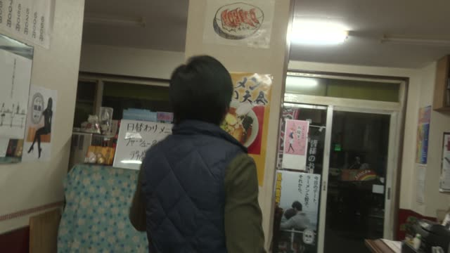

いつ

YouTube · 73 Easy Japanese Questions
最近いつ落ち込みましたか?最近はね、全然落ち込んでいませんね。
"When did you last feel down? Lately? I haven't been down at all."
いつ means "when". It asks for a time, and it sits where the time would go in the answer.
No particle after it: いつ落ち込みました, not いつに. A real time does take に (3時に), but いつ never does.
On this card, an interviewer asks when he last felt down. ました makes it polite.

Shirokuma Cafe · Episode 4
シロクマくん 免許はいつ取ったの？
"Shirokuma, when did you get your license?"
Casual: 取ったの？. On this card, someone asks Shirokuma when he got his license. Still no に after いつ.
Quick Examples
A friend says they're going to Japan.
いつ行くの？
"When are you going?"
CasualChatting with a coworker.
誕生日はいつですか？
"When is your birthday?"
いつ works like a noun, so です goes right after it.
PoliteYour classmate is studying hard.
試験はいつ？
"When's the exam?"
Between friends, just いつ. No です, no か.
CasualA shop is closed. You ask someone outside.
いつ開きますか？
"When does it open?"
PoliteWith and without
明日行きます。
"I'll go tomorrow." You already know when.
いつ行きますか？
"When will you go?" Swap the time for いつ, add か. No に.
Examples from Media
Kekkon Dekinai Otoko · Episode 1
いつから痛みますか？
"Since when has it hurt?"
いつから: since when.

Good Morning Call · Episode 8
え？ 店長 これ いつですか？
"Huh? Manager, when is this?"
Dungeon Meshi · Episode 17
次の出発は いつになさいますか？
"When will you set off next?"
なさいますか: very polite "will you do".

Weakest Beast · Episode 2
この前の人 いつ来るんすか？
"When's that guy from before coming?"
来るんすか: sloppy polite 来るんですか.

Shirokuma Cafe · Episode 16
いつ寝るんですか？
"When do you sleep?"
Asked of someone who says they'll work day and night.
1 Litre of Tears · Episode 4
いつ帰ってくるの？
"When are you coming back?"
Quartet · Episode 2
いつがいい？
"When's good for you?"
いつ + が: when works?
Quartet · Episode 3
あいつ いつ来んのかな？
"I wonder when he's coming."
来んの: spoken 来るの.
Further Reading
A Dictionary of Basic Japanese Grammar
Grammatical Terms, "WH-Word" · p. 14